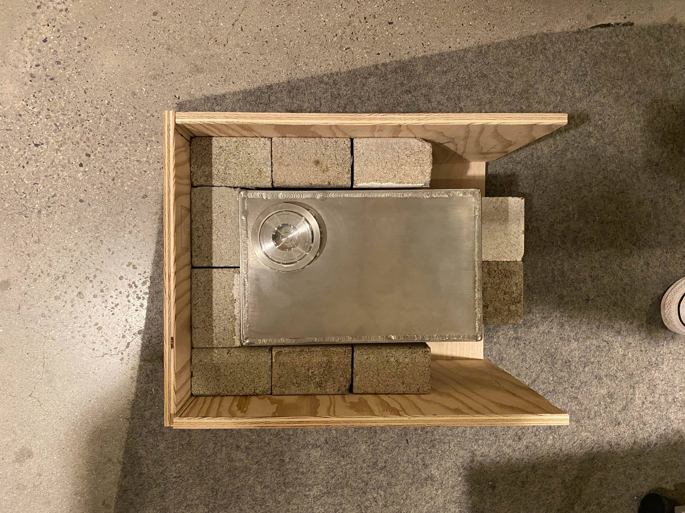
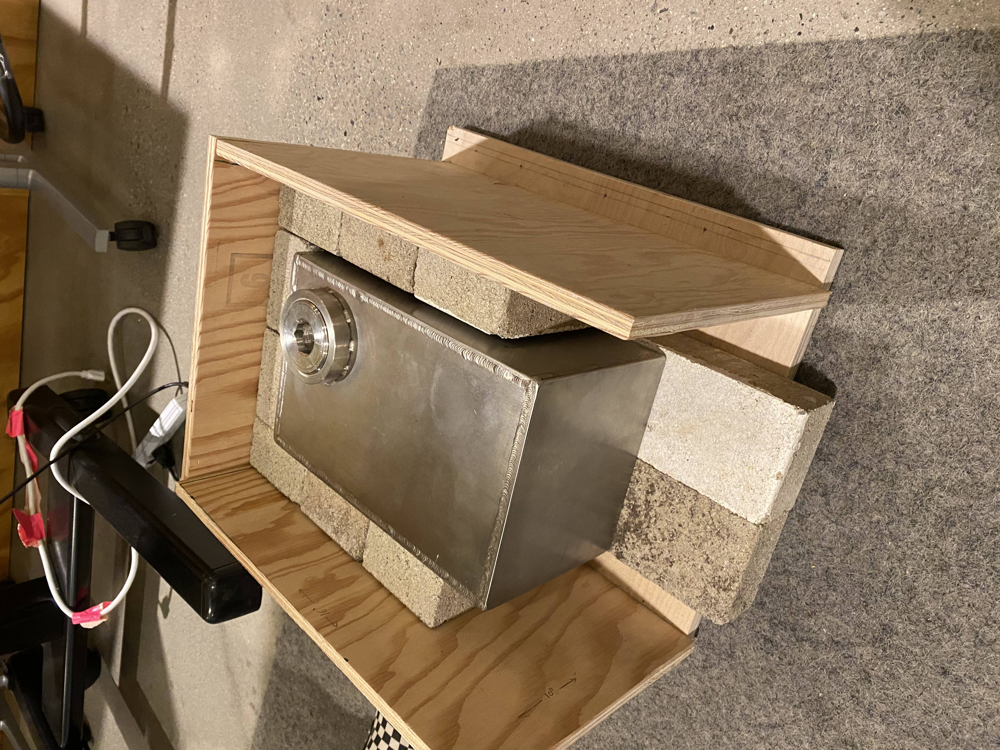

<topbar style="display:none;">
<item><a href="../index.html">Home</a></item>
<item><a href="../about.html">About</a></item>
</topbar>
<style>
a:link {
color: blue;
background-color: transparent;
text-decoration: underline;
}
a:visited {
color: pink;
background-color: transparent;
text-decoration: underline;
}
</style>
## Week 12
<br>
### Insulation construction
This week there unfortunately wasn't much progress to be made given the Thanksgiving break, but the one
thing that was accomplished was the construction of the frame for the insulation. The rest of the pilot holes were
drilled, and there were plenty of valuable lessons learned about measurement and drilling, i.e. plenty of mistakes were made.
But nonetheless the frame was still constructed and is decently sturdy.


### Moving Forward
Now that the insulation frame is complete, there are a multitude of things that I can do to help out other teams, like
help dish construction or helping mount the dish assembly to the insulation box. Fortunately there is a bit of excess wood
surrounding the salt box in the frame, and this extra wood can be used to help mount the dish assembly directly
to the insulation frame. So that shall be discussed next week, where to move forward to be the most productive and useful.